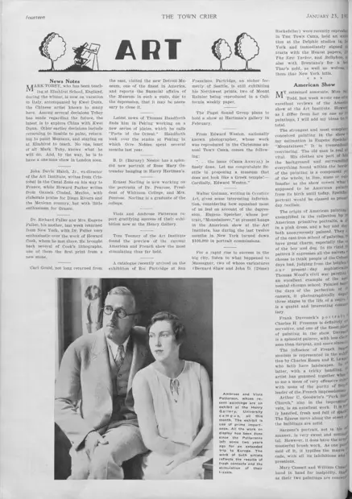

Art: News Notes
访问原网页 ↗Visit original website ↗

S145 · The Town Crier · 1932-01-23
西雅图艺术消息称托贝当时与 Kwei Dunn 在意大利度假，并谈及两人探索中国的打算。此为该刊之说；消息未交代行程出处。文中将中国之行写作设想。A Seattle art column reported that Tobey was vacationing in Italy with Kwei Dunn and mentioned a possible trip to China. The item gives no travel documents, and the China visit is framed as a plan.
馆藏图像与原文Archived images and documents

原始网址Original URL
https://cdm16118.contentdm.oclc.org/digital/collection/p16118coll23/id/20374